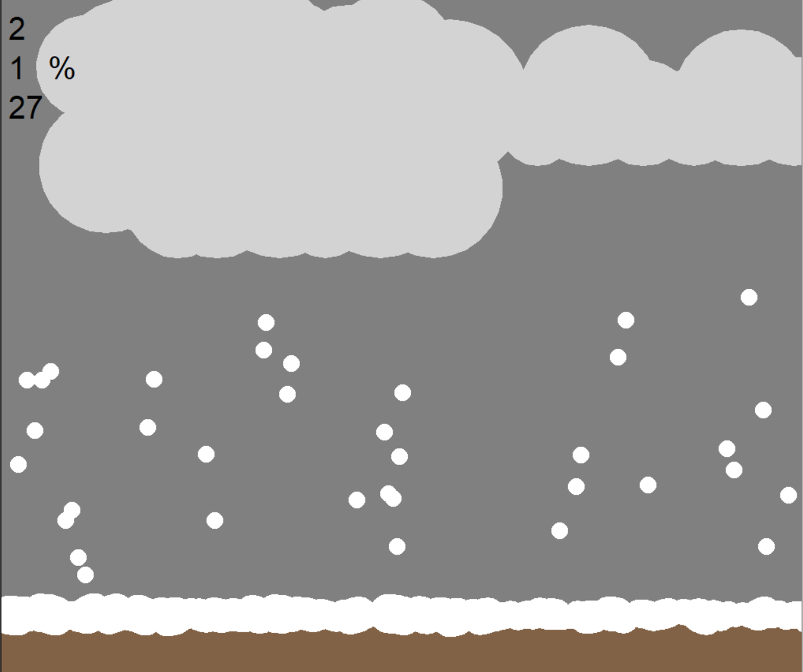

This is my Portfolio Page!
100% Correct Weather App that you can Definitey Rely on
It randomly generates one of four weather options (cloudy, sunny, rainy, snowy) and lets you guess which one it is, after which is will generate an animation that shows that weather.
When moving parts are involved in the sunny, rainy, and snowy weathers, multiple sprites are generated and put into a list where a general command allows them to move in the desired path.
All clouds are randomly generated by a turtle drawing circles of random radii and random locations coded in a way that it covers most of the sky.
Using App Inventor to make app game Duck Hunter.

Interactive Fiction Rags to Riches.

Modified bits in pictures.

Use data files to create graphs.

Using netlogo do remix of illusions.